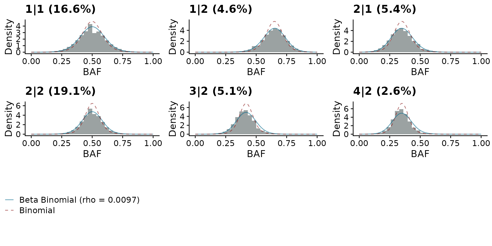

Beta-Binomial model for signals
BetaBinom.Rmd
library(signals)Background
This vignette demonstrates how to use a beta-binomial model instead of a binomial model for the HMM emission model.
Inference
data("haplotypes")
data("CNbins")
haplotypes <- format_haplotypes_dlp(haplotypes, CNbins)
hscn <- callHaplotypeSpecificCN(CNbins, haplotypes, likelihood = "binomial")
print(hscn)
#> Haplotype specific copy number object
#>
#> Number of cells: 250
#> Bin size: 0.5 Mb
#> Inferred LOH error rate: 0.018
#> Emission model for HMM: binomial
#> Average distance from median to expected BAF = 0.0025
#> Average ploidy = 4
#> Average number of segments = 79
hscn_bb <- callHaplotypeSpecificCN(CNbins, haplotypes, likelihood = "betabinomial")
#> VGLM linear loop 1 : loglikelihood = -312957.3901
#> VGLM linear loop 2 : loglikelihood = -308994.9722
#> VGLM linear loop 3 : loglikelihood = -308442.2238
#> VGLM linear loop 4 : loglikelihood = -308416.2805
#> VGLM linear loop 5 : loglikelihood = -308415.8977
#> VGLM linear loop 6 : loglikelihood = -308415.8943
#> VGLM linear loop 7 : loglikelihood = -308415.8942
print(hscn_bb)
#> Haplotype specific copy number object
#>
#> Number of cells: 250
#> Bin size: 0.5 Mb
#> Inferred LOH error rate: 0.018
#> Emission model for HMM: betabinomial
#> Inferred over dispersion: 0.0096
#> Tarones Z score: 181.439
#> Average distance from median to expected BAF = 0.0026
#> Average ploidy = 4
#> Average number of segments = 79We see that the model inferred a modest degree of overdispersion in the data, but that this was siginificantly different from 0 dispersion (Tarones Z-score is high).
Below I’ll plot the heatmaps for the two output, which in this case are very similar.

QC plot
To interrogate the difference between the binomial and beta-binomial models we can plot the BAF and overlay the two models.
plotBBfit(hscn_bb)
We can check how similar the results are by comparing the two dataframes. We find for this data that the results are very similar.
print(dim(hscn$data))
#> [1] 1093750 20
print(dim(hscn_bb$data))
#> [1] 1093750 20
all.equal(orderdf(hscn$data), orderdf(hscn_bb$data))
#> [1] "Component \"alleleA\": 'is.NA' value mismatch: 17536 in current 17517 in target"
#> [2] "Component \"alleleB\": 'is.NA' value mismatch: 17536 in current 17517 in target"
#> [3] "Component \"totalcounts\": 'is.NA' value mismatch: 17536 in current 17517 in target"
#> [4] "Component \"BAF\": 'is.NA' value mismatch: 17536 in current 17517 in target"
#> [5] "Component \"state_min\": Mean relative difference: 0.6055791"
#> [6] "Component \"A\": Mean relative difference: 0.5750316"
#> [7] "Component \"B\": Mean relative difference: 0.7174441"
#> [8] "Component \"state_AS_phased\": 32657 string mismatches"
#> [9] "Component \"state_AS\": 2802 string mismatches"
#> [10] "Component \"LOH\": 1828 string mismatches"
#> [11] "Component \"phase\": 29571 string mismatches"
#> [12] "Component \"state_phase\": 30538 string mismatches"
#> [13] "Component \"state_BAF\": Mean relative difference: 1.011266"Another thing we can check is the total number of segments identified by the HMM. Using the beta-binomial model should reduce the influence of any noisy regions and thus we might expect fewer segments. We do observe fewer segments in the beta-binomial model.